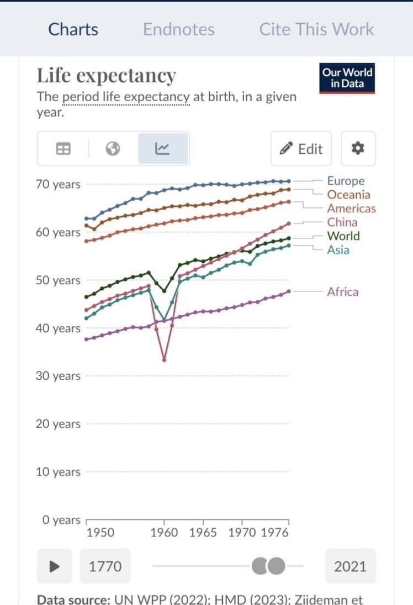

拱北靠北
@psyofsouthwest
@bolckAshley 那时候老中搞低碳环保（x）

𝐀𝐬𝐡𝐥𝐞𝐲 𝐁𝐥𝐨𝐜𝐤🍥🌹🇹🇼🇪🇺🏳️⚧️
@bolckAshley
你的增速快主要是因為原本你老中的醫療水平落後的令人發指好不好，以韓台舉例吧，人家1950年代就已經基本解決了公共衛生的基本問題，人均壽命都能到50以上了，在往後因為邊際效應導致了增速下降這不很正常
而且你國在1960年代的時候人均壽命還暴跌了一段時間，具體原因我不說是啥😇 https://t.co/NuscFq1dFP https://t.co/JgLExDkR88